主頁
牌組分享
搜索卡片
推薦卡店
【主題牌組】「驅魔修女」牌組介紹 ( エクソシスター | EXORSISTER | 驱魔姐妹 )
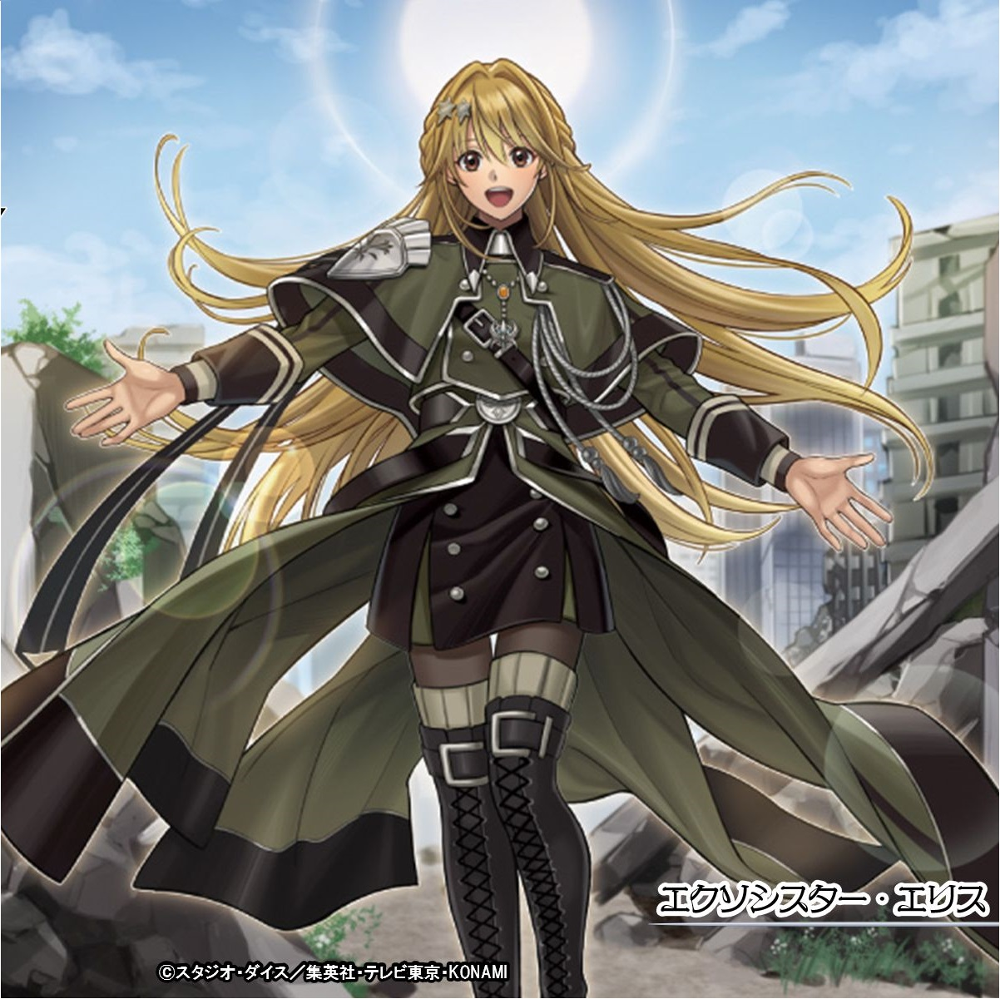
統一光屬性，下級為4星魔法使，超量為戰士族， 其下級共通特色是對手將卡片離開墓地，可以從觸發效果從額外特召超量，並且超量怪以本家特召為素材超量的回合也有特別的效果，主要設計應該是讓你在對手回合觸發效果變身干擾。
本家卡片介紹－
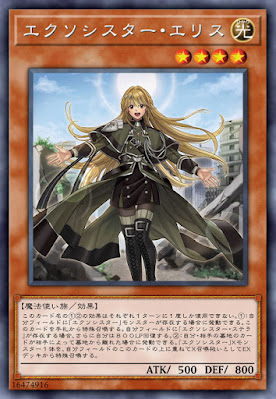
《驅魔修女﹒愛莉絲》
此卡名的①②效果1回合各僅能使用1次。 ①：我方場上有「驅魔修女」怪獸存在的場合才能發動。此卡從手牌特殊召喚。我方場上有「驅魔修女 史提拉」存在的場合，我方再回復800生命值。 ②：我方‧對方墓地之卡因為對方而從墓地離開的場合才能發動。把1體「驅魔修女」超量怪獸在我方場上之此卡上方重疊當作超量召喚從額外牌組特殊召喚。
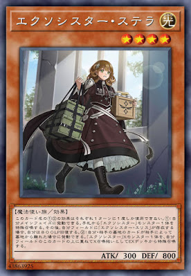
《驅魔修女﹒史黛拉》
此卡名的①②效果1回合各僅能使用1次。 ①：我方主要階段才能發動。從手牌把1體「驅魔修女」怪獸特殊召喚。那之後，我方場上有「驅魔修女 愛麗絲」存在的場合，我方再回復800生命值。 ②：我方‧對方墓地之卡因為對方而從墓地離開的場合才能發動。把1體「驅魔修女」超量怪獸在我方場上之此卡上方重疊當作超量召喚從額外牌組特殊召喚。
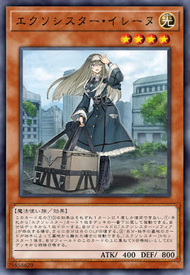
《驅魔修女﹒伊雷娜》
此卡名的①②效果1回合各僅能使用1次。 ①：從手牌把1張「驅魔修女」卡回到牌組最下面才能發動。我方從牌組抽1張卡。我方場上有「驅魔修女 索菲亞」存在的場合，我方再回復800生命值。 ②：我方‧對方墓地之卡因為對方而從墓地離開的場合才能發動。把1體「驅魔修女」超量怪獸在我方場上之此卡上方重疊當作超量召喚從額外牌組特殊召喚。
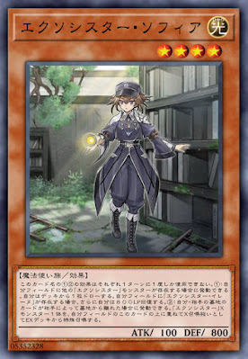
《驅魔修女﹒索菲婭》
此卡名的①②效果1回合各僅能使用1次。 ①：我方場上有其他的「驅魔修女」怪獸存在的場合才能發動。我方從牌組抽1張卡。我方場上有「驅魔修女 伊雷娜」存在的場合，我方再回復800生命值。 ②：我方‧對方墓地之卡因為對方而從墓地離開的場合才能發動。把1體「驅魔修女」超量怪獸在我方場上之此卡上方重疊當作超量召喚從額外牌組特殊召喚。
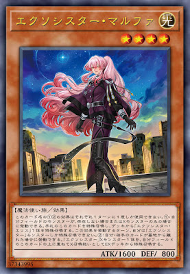
《驅魔修女﹒瑪爾法》
此卡名的①②效果1回合各僅能使用1次。 ①：我方場上不存在怪獸的場合或僅存在超量怪獸的場合才能發動。此卡從手牌特殊召喚，從牌組把1體「驅魔修女﹒愛莉絲」特殊召喚。此效果發動的回合，我方不是「驅魔修女」怪獸不能特殊召喚。 ②：我方・對方墓地之卡從墓地離開的場合才能發動。把1體「驅魔修女」超量怪獸在我方場上之此卡上方重疊當作超量召喚從額外牌組特殊召喚。
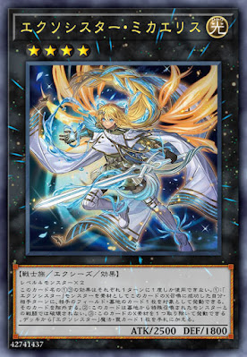
《驅魔修女﹒米迦愛麗絲》
等級四怪獸二體 此卡名的①③效果1回合各僅能使用1次。 ①：用「驅魔修女」怪獸作為素材把此卡超量召喚成功的我方‧對方回合，以對方場上‧墓地1張卡為對象才能發動。該卡除外。 ②：此卡不會被從墓地特殊召喚的怪獸戰鬥破壞。 ③：把此卡1個超量素材去除才能發動。從牌組把1張「驅魔修女」魔法‧陷阱卡加入手牌。
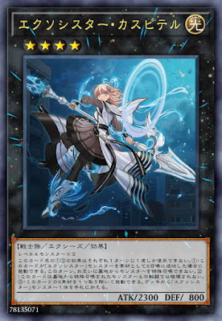
《驅魔修女﹒卡斯皮特爾》
等級四怪獸二體 此卡名的①③效果1回合各僅能使用1次。 ①：用「驅魔修女」怪獸作為素材把此卡超量召喚成功的場合才能發動。此回合，雙方不能從墓地把怪獸特殊召喚。 ②：此卡不會被從墓地特殊召喚的怪獸戰鬥破壞。 ③：把此卡1個超量素材去除才能發動。從牌組把1體「驅魔修女」怪獸加入手牌。
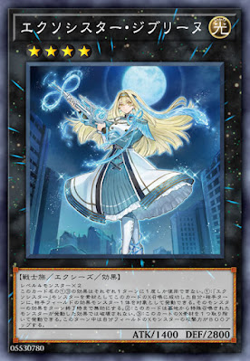
《驅魔修女﹒吉卜莉》
等級四怪獸二體 此卡名的①③效果1回合各僅能使用1次。 ①：用「驅魔修女」怪獸作為素材把此卡超量召喚成功的我方‧對方回合，以對方場上1體效果怪獸為對象才能發動。該怪獸之效果直到回合結束為止無效。 ②：此卡不會被從墓地特殊召喚的怪獸發動的效果破壞。 ③：把此卡1個超量素材去除才能發動。此回合中我方場上超量怪獸攻擊力上升800。
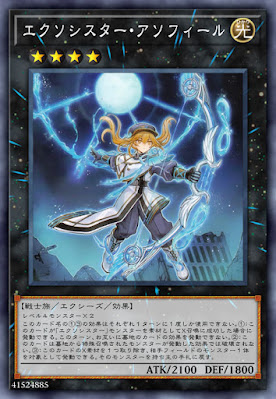
《驅魔修女﹒阿索菲勒》
等級四怪獸二體 此卡名的①③效果1回合各僅能使用1次。 ①：用「驅魔修女」怪獸作為素材把此卡超量召喚成功的場合才能發動。此回合，雙方不能把墓地卡片的效果發動。 ②：此卡不會被從墓地特殊召喚的怪獸發動的效果破壞。 ③：把此卡1個超量素材去除才能發動。以對方場上1體怪獸為對象才能發動。該怪獸回到持有者手牌。
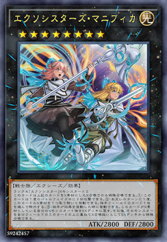
《驅魔修女們的聖詠》
此卡用上述之卡做為超量素材的超量召喚才能特殊召喚。 ①：此卡在1次的戰鬥階段中可以進行2次攻擊。 ②：雙方回合1次，將此卡1個超量素材取除才能發動。選對方場上1張卡除外。 ③：對方將效果發動時才能發動。選擇做為此卡超量素材的1體我方超量怪獸回到額外牌組。那之後，可以將該怪獸在我方場上的此卡上方重疊當作超量召喚從額外牌組特殊召喚。
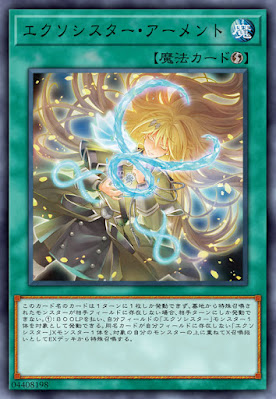
《驅魔修女﹒阿們武身》
此卡名的卡1回合僅能發動1張，從墓地特殊召喚的怪獸不在對方場上存在的場合，不在對方回合不能發動。 ①：支付800生命值，以我方場上1體「驅魔修女」怪獸為對象才能發動。把1體同名卡不在我方場上存在的「驅魔修女」超量怪獸在對象怪獸上方重疊當作超量召喚從額外牌組特殊召喚。
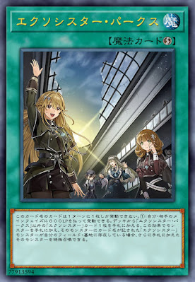
《驅魔修女﹒和平訪問》
此卡名的卡1回合僅能發動1張。 ①：我方‧對方主要階段，支付800生命值才能發動。從牌組把1張此卡名以外的「驅魔修女」卡加入手牌。因此效果將怪獸加入手牌，且該怪獸所記述卡名之「驅魔修女」怪獸在我方場上‧墓地存在的場合，可以再把加入手牌的該怪獸特殊召喚。
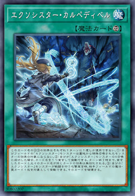
《驅魔修女﹒把握旦夕》
此卡名的②③效果1回合各僅能使用1次。 ①：我方場上的「驅魔修女」怪獸不會成為從墓地特殊召喚之怪獸的效果對象。 ②：我方把「驅魔修女」怪獸超量召喚成功的場合，宣言1個卡名才能發動。直到回合結束為止，宣言之卡以及原卡名和該卡相同的卡效果無效化。 ③：我方的「驅魔修女」怪獸進行戰鬥的攻擊宣言時，以對方場上1張魔法‧陷阱卡為對象才能發動。該卡破壞。
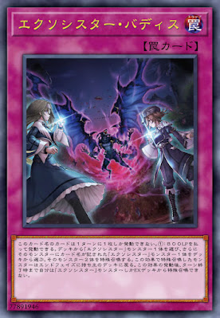
《驅魔修女﹒共赴何方》
此卡名的卡1回合僅能發動1張。 ①：支付800生命值才能發動。從牌組選擇1體「驅魔修女」怪獸，再從牌組選擇1體該怪獸所記述卡名之「驅魔修女」怪獸，那2體怪獸特殊召喚。因此效果特殊召喚的怪獸在結束階段回到持有者牌組。此卡的發動後，直到回合結束我方不是「驅魔修女」怪獸不能從額外牌組特殊召喚。
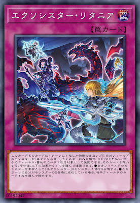
《驅魔修女﹒連禱》
此卡名的①②效果1回合各僅能使用1次。 此卡名的卡1回合僅能發動1張。 ①：我方場上的怪獸只有「驅魔修女」怪獸的場合，支付800生命值，以對方場上﹒墓地1張卡為對象才能發動。該卡除外。那之後，可以選擇以下1個效果使用。 ●用我方場上的怪獸為超量素材把1體「驅魔修女」超量怪獸超量召喚。 ●此回合我方有把怪獸超量召喚成功的場合，選對方場上1張卡除外。
遊玩風格－
基本上是伴隨著對面移動墓地，去變身干擾的牌組， 但並不是什麼牌組都仰賴墓地，很難期待以和平訪問、共赴何方以外的方式去完成戰術。 陷阱看對面抓墓情形使用，配合新卡馬爾法與超量R8可以除外對手場上或墓地的牌作干擾。
主題卡表－
R4牌組
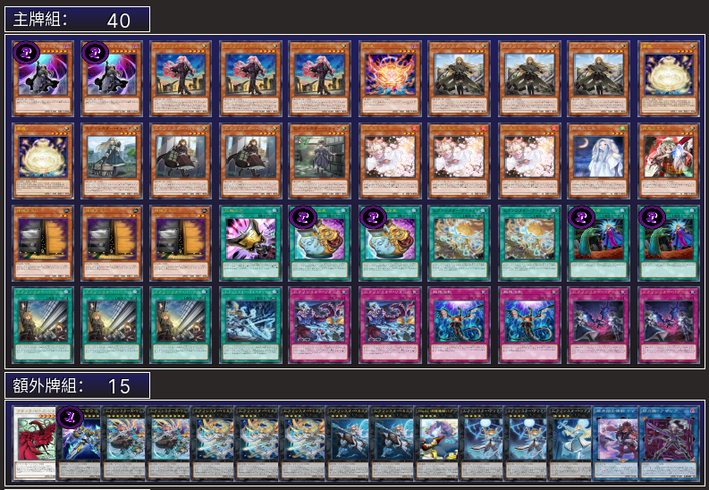